Real-time Occupancy Estimation Using WiFi Network to Optimize HVAC Operation
有關於大建築物的冷暖空調設備能源節省系統，透過實時偵測建築物內人數來調節運轉動力比例
Robust Occupancy Inference with Commodity WiFi
提出一個Wireless Occupancy Inference (WiPing) system可以判斷準確穩定的室內占用人數
Wi-Fi Sensing: Application and Challenges
基於Wifi的多種應用感測系統
Wi-Fi People localization; elderly people monitoring; activity classification; gesture
recognition; people counting; through the wall sensing; behind the corner sensing
Highly Accurate Occupancy Estimation Using RF Signals and Wi-Fi
利用兩個wifi拉出一條接收與發射訊號的通道，當有人經過感應直接干擾或多重路徑干擾，
來判斷當前有多少人
Building Occupancy Detection，Model and Application with WiFi and BLE Technologies
利用檢測到的WiFi請求的時間序列和隨機特徵，建立了一種可靠的自動佔用檢測預測機制
基於馬爾可夫鏈理論的乘員模型，並提出了一種基於馬爾可夫反饋遞歸神經網絡M-FRNN的乘員預測方法
Occupancy prediction through Markov based feedback recurrent neural network (MFRNN) algorithm with WiFi probe technology
這篇提到用Markov based feedback recurrent neural network (MFRNN)模型來推測實際人數
- p.30 每個人可能有多個設備，Wang et al., 2017c提出signal patterns of connection request
去濾掉多重設備訊號 - 利用裝置持續訊號分成: 20分鐘以下短期存在、14小時以上為機器設備
- p.57 利用camera當作ground true
An evaluation of crowd counting methods, features and regression models
博士論文 Crowd Monitoring Using Computer Vision
---- 網路封包進行手機裝置辨識 ----
2021/2/3, 有關一些無線網路封包進行手機裝置辨識(fingerprint).
Do You Hear What I Hear? Fingerprinting Smart Devices Through Embedded Acoustic Components
- 這篇是用麥克風、揚聲器的音頻聲學特徵去做，
不同供應商生產的指紋設備進行指紋識別
In terms of software based fingerprinting, researchers have looked at fingerprinting techniques that differentiate between unique devices over a Wireless Local Area Network (WLAN) simply through a timing analysis of 802.11 probe request frames [30].
Identifying unique devices through wireless fingerprinting
Others have looked at exploiting the difference in firmware and device driver running on IEEE 802.11 compliant devices [37].
802.11 MAC headers have also been used to track unique devices [40].
Open source toolkits like Nmap [50] and Xprobe [68] can remotely fingerprint an operating system by identifying unique responses from the TCP/IP networking stack.
Wireless Fingerprinting Uncertainty Prediction Based on Machine Learning
use ANN to improve localization (2018), use wireless measurement as input.
- 有些方法加入camera, LiDAR, inertial, sound sensor一起實作
-
目標是預測什麼? 定位位置? 還是判斷手機廠牌?
該篇文章主要是在做室內定位，Section 3裡面有提到Dead-Reckoning
和wifi fingerprint的實驗結果。大致內容為：幾個tester拿著手機在
目標校園範圍行走(收集訓練資料)。
主要貢獻：Compared to the traditional DR/wifi fingerprinting integrated method that uses a constant measurement noise setting for th wireless fingerprinting-based location update,
the proposed method which sets the measurement noise adaptively by using ML approaches, had reduced the indoor localization errors by 23.3 % to 32.3 %. -
indoor fingerprinting: nearest neighbors, Gauss Process model, random forest, SVM
Input RSS measurement, Output 2-dim location
-
A Passive Approach to Wireless Device Fingerprinting
They propose a passive blackbox-based technique for determining
the type of access point (AP) connected to a network.
→ fingerprinting network devices
Device Fingerprinting in Wireless Networks: Challenges and Opportunities, 2016 IEEE
device fingerprinting, the process of gathering device information to generate device-specific signatures and using them to identify individual device
Vendor specific v.s. Device specific feature
-
一個應用:
三個步驟想法辨別 fake AP。透過設置一個Fingerprint Security分析當前APs的一些特徵。 去找到 fake AP:- identifying relevant feature
- extractin and modeling feature
- device identification

-
那些特徵? feature for device fingerprinting
根據網路七層架構分類- Physical layer
- MAC layer
- Network and upper layer
-
PHY Layer: derive from the received RF waveform.
-
Location-dependent features alone are insufficient for fingerprinting as devices may move and the channel condition changes over time. (會因所處位置隨時間改變導致fingerprint特徵不一致)
- RSS (dB) (RSS measures the average signal power at the receiver and depend on the transmission power at the sender and the attenuation in the channel.)
- CSI (channel state information)
- CFR (channel frequency response)
-
Location-independent 比較偏向硬體上廠商實作差異
- channel width
- channel doping
- concentration
- oxide thickness
-
-
MAC Layer: for vendor specific, easy to extract and do not require specialized hardware.
- 802.11 MAC header fields, frame type, subtype, Frame Control flags (Bratus et al. [5])
- transmission rate, frame size, medium access time, transmission time, frame inter-arrival time (Neumann et al. [15])
-
Network and Upper Layer:
- In [10], Gao et al. use TCP or UDP packet inter-arrival
time (ITA) from APs as signatures to distinguish AP types. - web browser signatures
- In [10], Gao et al. use TCP or UDP packet inter-arrival
A comparsion of various features.

Fingerprinting Algorithms
- white-list based
- unsupervised learning
White-list based fingerprinting algorithm using similarity measurement

Unsupervised learning fingerprinting

下一篇正在找引用此篇Device Fingerprinting in Wireless Networks: Challenges and Opportunities, 2016 IEEE的文章
- [x] A Survey of Techniques for the Identification of Mobile Phones Using the Physical Fingerprints of the Built-In Components
- physical feature = hardware fingerprint
- fingerprinting of human beings in biometric domain
- main techniques for identification of a mobile phone (e.g. camera, RF front-end)
- [x] On the authentication of devices in the Internet of things
- [x] Data-Driven Design of Intelligent Wireless Networks: An Overview and Tutorial
- ORACLE: Optimized Radio clAssification through Convolutional neuraL nEtworks
- Similarity-based: In [4], a passive fingerprinting technique is proposed that identifies the wireless device driver running on an IEEE 802.11 compliant node by collecting traces of probe request frames from the devices.
- Classifiation-based: The key innovation in our approach, termed ORACLE, is that it learns the unique modifications present within the in-phase (I) and quadrature-phase (Q) samples that are introduced in the signal as it passes through the transmitter chain.
第19講 in-phase and quadrature-phase projection
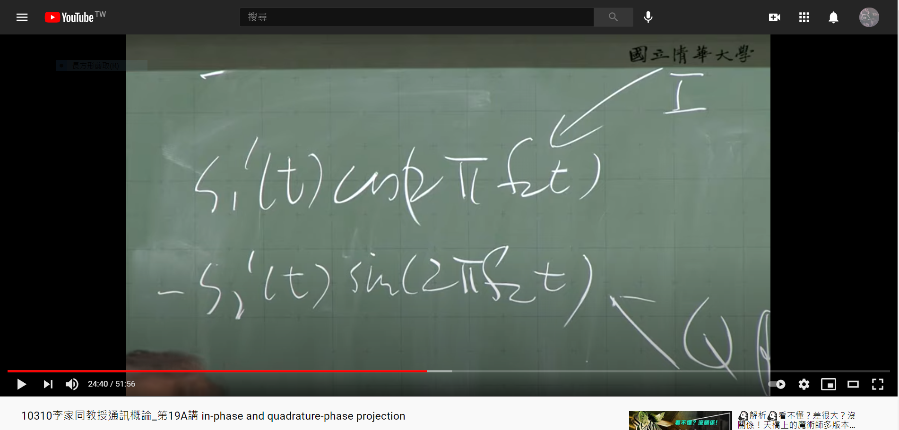
- A Robust RF Fingerprinting Approach Using Multisampling Convolutional Neural Network, IEEE 2019
- propose a multisampling convolutional neural network (MSCNN) to extract RF fingerprint from the selected ROI (region of interest) for classifuing ZigBee devices.
- Receiver: universal software radio peripheral (USRP)
- Target for indentification: 54 CC2530 devices.
- RF fingerprint:
- transient: the duration of turn-on and turn-off
- steady-state: obtained by receivers like USRP
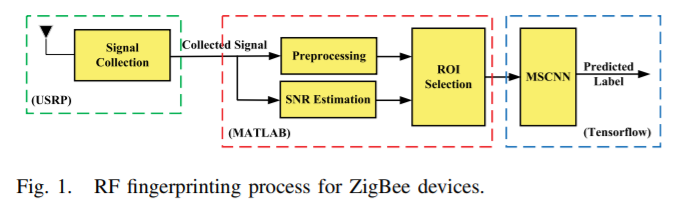
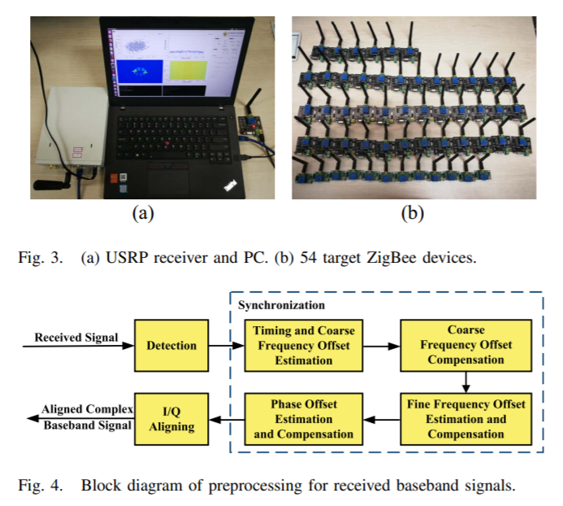
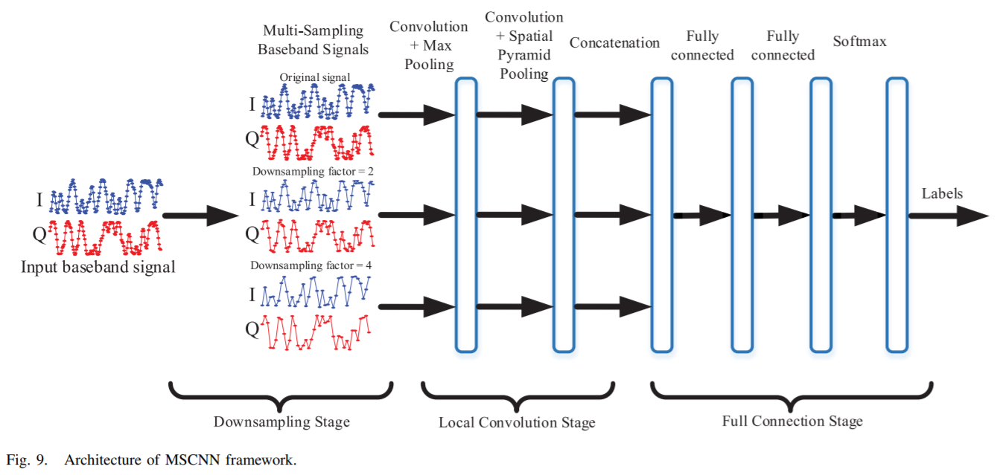
- Deep learning based RF fingerprinting for device identification and wireless security, 2018 IET
- Summary: we will demonstrate that deep neural networks can be used to effectively implement device identification with high accuracy through automatic learning of device-dependent RF fingerprints. In contrast to existing works, the proposed approach does not require human intervention in defining what features should be used (called human-engineered features) in the RF fingerprinting process.
- Data collection: transmission/reception experiments using seven identical
National Instruments USRP software defined radio modules
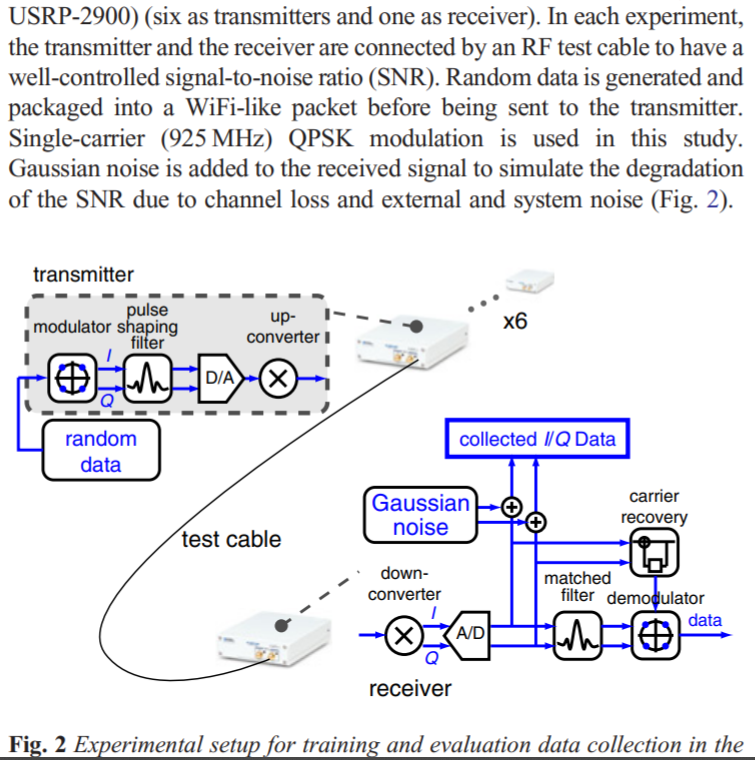
Baseband inphase (I) and quadrature (Q) samples are collected from the receiver. A subtle but important question is whether some level of physical layer correction should be implemented at the receiver.
猜測他是直接把raw I/Q sample 放入 LSTM 去train，然後做判斷這些訊號屬於哪一個transmitter(共6個)。
- IoT Device Fingerprint using Deep Learning, 2018 IEEE
- We connected two Apple devices iPad4 and iPhone 7 Plus to the router and created IAT (Inter Arrival Time of two packets) graphs for these two devices. We used Convolution Neural Network (CNN) to identify the devices and observed the accuracy of 86.7%.
- DFP (device fingerprint) model 1:
- Pi as a router, probe frame that broadcast by Pi and response from the device.
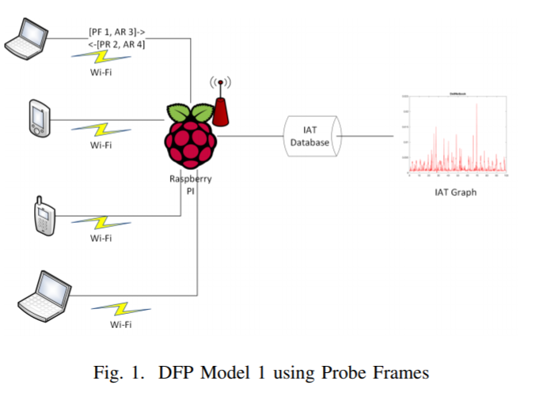- DFP (device fingerprint) model 2:
- Pi as a router, ping packets and IAT of ping packets.
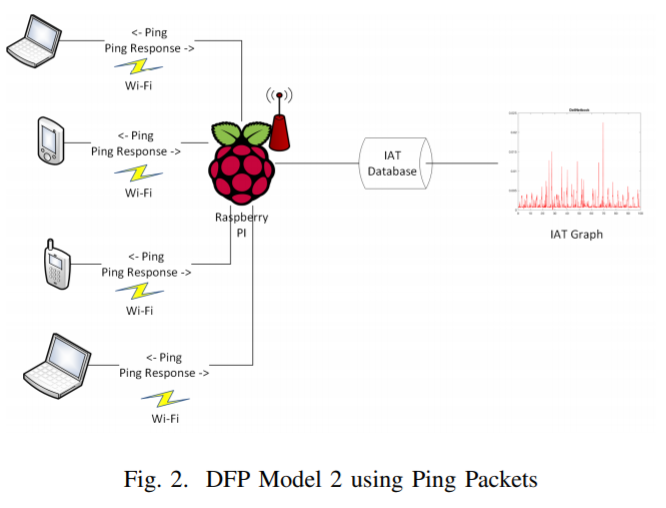- DFP (device fingerprint) model 3:
- all device connect to Pi using WiFi, capturing the UDP, ARP, ICMP packets
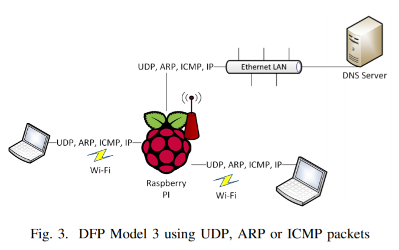- DFP (device fingerprint) model 4:
- all device connect to Pi using WiFi, capturing the TCP, IP packets
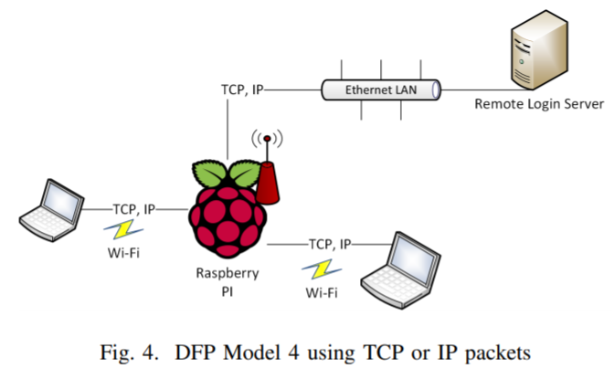- Given the IAT graphs of devices (iPad4 and iPhone7 plus)
→ image preprocessing, shear transformation
→ CNN model- Note: Packet sniffing application with filters for different types of packets logged arrival time with features, e.g. IP addresses, MAC addresses and Port addresses of the respective devices connected to the router shown in the Figures 1 - 4.
- RF Fingerprinting of IoT Devices Based on Transient Energy Spectrum, IEEE 2019
- turn-on transient behavior of WiFi devices is explained through instantaneous characteristics of signals.
- RF fingerprinting method based on transient energy spectrum
- RF fingerprints be extracted from different regions of transmitted signals
- turn-on transient
- preamble 前導信號，可作為同步用途，包括封包偵測、頻率偏移、碼框同步與通道估算
- data regions
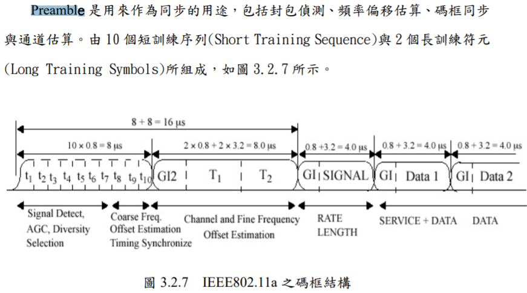
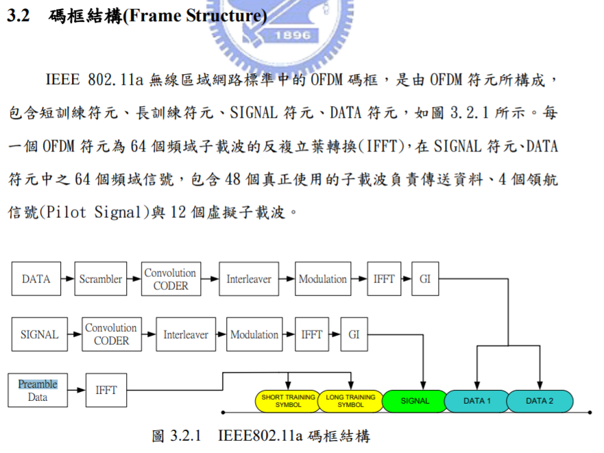
- 使用 instentaneous amplitude of signal
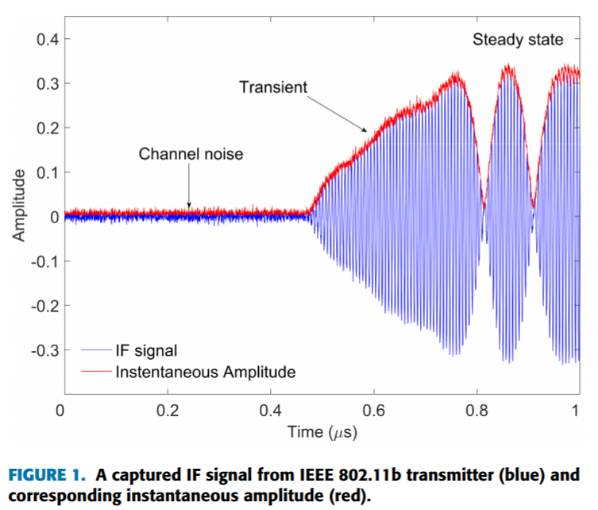- 流程:
- intermediate frequency (IF) signals
- 分析transient訊號、轉換出spectral fingerprint特徵 (signal characteristics are instantaneous amplitude, phase, and frequency)
- classification TA1, TA2, TA3, TA4, TA5, ...
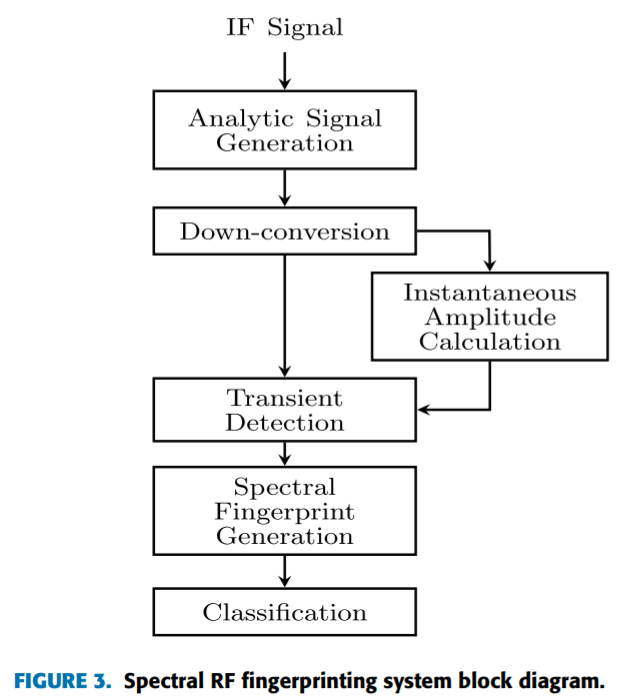
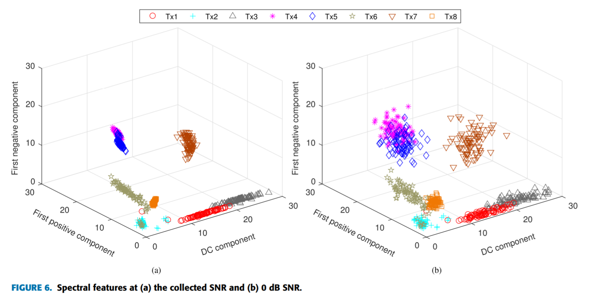
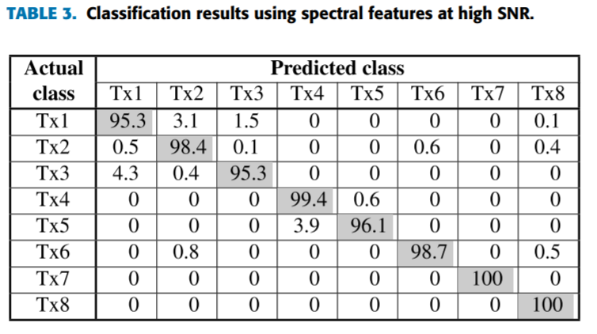
- IoT Device Fingerprinting Machine Learning based Encrypted Traffic Analysis, 2019 IEEE
- To discover the types of the IoT devices transmitting traffic in the network using machine learning.
- IoT fingerprint attack (work even when device use encryption)
- characteristics of IoT devices data collected from IBM and Cisco
- the speed and accurancy of the proposed attack
- Goal: (Classification) classifiy each encrypted traffic to the device type
- extract feature
- Protocol: the types of dominant protocols, port intervals, packet size, packet quantity, availability time, inter-arrival time, cumulative count, etc.
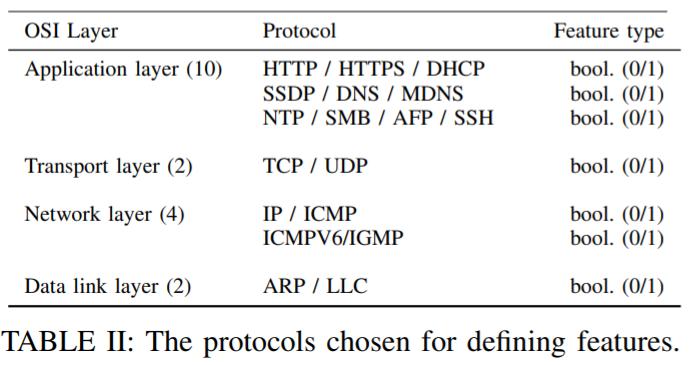- Statistical of traffic (data): minimum, maximum, mean, median, standard deviation, variance, etc.
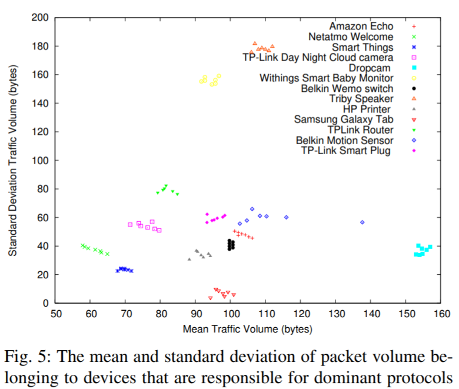
→ relevant: inter-arrival time, packet volume- make classifier (k-NN, SVM, RF, AdaBoost, ExtraTree)
- inference the type of devices.
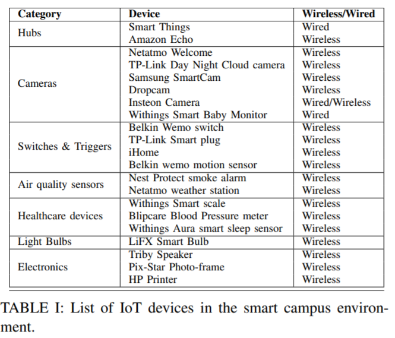
dynamic slide window in traffic data
一個封包（packet）分成兩個部份，包括控制資訊，也就是表頭資料（header），和資料本身，也就是負載（payload）。
傳輸層協定，如傳輸控制協定（TCP）與使用者資料包協定（UDP），在封包表頭中，定義了來源埠號與目的埠號。一個通訊埠號使用16位元無符號整數（unsigned integer）來表示，其範圍介於0與65535之間。在TCP協定中，埠號0是被保留的，不可使用。
1--1023 系統保留，只能由root使用者使用。1024---4999 由客戶端程式自由分配。5000---65535 由伺服器端程式自由分配在UDP協定中，來源埠號是可以選擇要不要填上，如果設為0，則代表沒有來源埠號。
2020/2/26 AI領航(safe box)開會
-
IoT資訊安全風險檢測
-
網路威脅檢測
- 周遭網路狀況風險判斷? 內網外網
-
弱點掃描
- IoT自身漏洞
-
智慧化IoT之情資分析
- 情資進來後，如何分析、處理策略，通報客戶。
-
合規/法尊組態檢測
-
-
場域:
- 交通場域
- 商圈場域
-
商業模式:
企業、訂閱制、- 網路威脅檢測
- 弱點掃描
- 智慧化IoT之情資分析
- 合規/法尊組態檢測
-
無線資料(天線)+有線資料(網路設備)
AI 新創領航計畫
台灣資通產業標準協會 - 網路攝影機資安測試規範
2021/02/06 Facebook Prophet: time series forecast
Prophet，Facebook在2017年2月23日開源的時序預測庫。我們也將用它預測Medium每天發表的文章數。(https://www.mdeditor.tw/pl/20gi/zh-tw)
GitHub: prophet
Offical getting start
2020/11/24 承澔分享YOLO
-
CNN
-
RCNN: two-step: region detection, then CNN to classification
→ fastRCNN, fasterRCNNone-step: 只跑一次CNN就可以確定有興趣的區域，然後判斷圖片 原本y output只有classification的資訊， 增加位置資訊(物件在3x3裡的哪一格)、(那一格的高度與寬度) Data格式: pascal voc xml